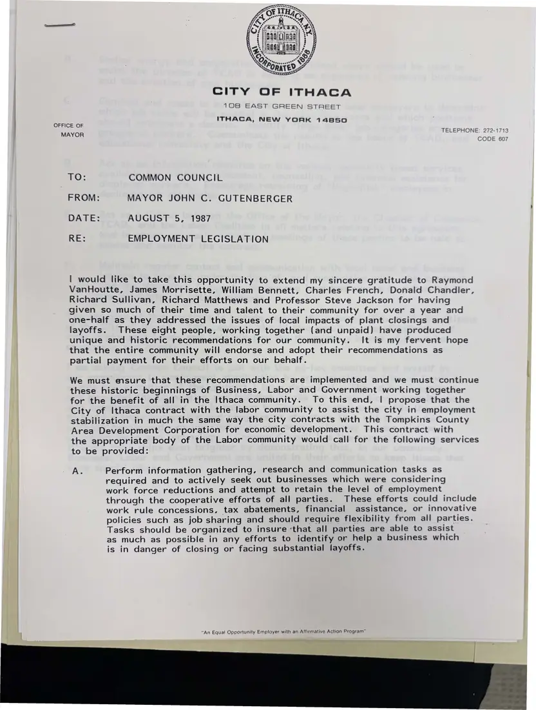
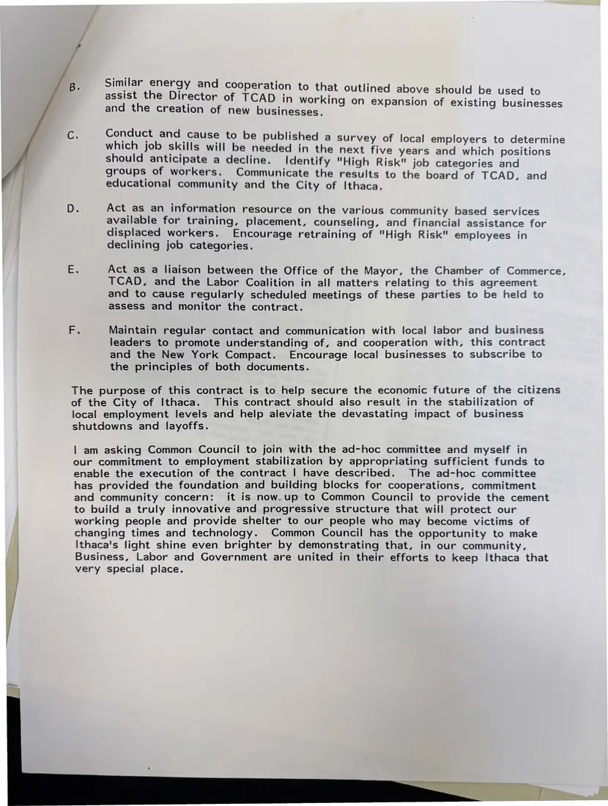

Memorandum, 2 pages
Mayor John Gutenberger to Common Council: “Employment Legislation”
August 5, 1987
The mayor thanks the business, labor, and university members of his ad hoc committee on plant closings and asks the Council to fund a contract with the labor community for employment stabilization services, from surveying local employers to assisting displaced workers.
Page 2 was photographed twice; the duplicate is not shown.
Download or cite this itemPages


(open zoom view)Read the page text (machine-read, mostly readable)
This text was generated automatically from the photograph and has not been corrected. The image is the authoritative record.
CITY OF ITHACA 108 EAST GREEN STREET ITHACA, NEW YORK 14850 OFFICE OF Scucel nt ae TO: COMMON COUNCIL FROM: MAYOR JOHN C. GUTENBERGER DATE: AUGUST 5, 1987 RE: EMPLOYMENT LEGISLATION | would like to take this opportunity to extend my sincere gratitude to Raymond VanHoutte, James Morrisette, William Bennett, Charles French, Donald Chandler, Richard Sullivan, Richard Matthews and Professor Steve Jackson for having given so much of their time and talent to their community for over a year and one-half as they addressed the issues of local impacts of plant closings and layoffs. These eight people, working together (and unpaid) have produced unique and historic recommendations for our community. It is my fervent hope that the entire community will endorse and adopt their recommendations as partial payment for their efforts on our behalf. We must esure that these recommendations are implemented and we must continue these historic beginnings of Business, Labor and Government working together for the benefit of all in the Ithaca community. To this end, | propose that the City of Ithaca contract with the labor community to assist the city in employment stabilization in much the same way the city contracts with the Tompkins County Area Development Corporation for economic development. This contract with the appropriate body of the Labor community would call for the following services to be provided: A. Perform information gathering, research and communication tasks as required and to actively seek out businesses which were considering work force reductions and attempt to retain the level of employment through the cooperative efforts of all parties. These efforts could include work rule concessions, tax abatements, financial assistance, or innovative policies such as job sharing and should require flexibility from all parties. Tasks should be organized to insure ‘that all parties are able to assist as much as possible in any efforts to identify or help a business which is in danger of closing or facing substantial layoffs. “An Equal Opportunity Employer with an Affirmative Action Program”


(open zoom view)Read the page text (machine-read, mostly readable)
This text was generated automatically from the photograph and has not been corrected. The image is the authoritative record.
Similar energy and cooperation to assist the Director of TCAD i that outlined above should be used to and the creation of new busi n working on expansion of existing businesses nesses. Conduct and cause to be published a surve which job skills will be needed in the n should anticipate a decline. Identify "High Risk" job categories and groups of workers. Communicate the results to the board of TCAD, and educational community and the City of Ithaca. y of local employers to determine ext five years and which positions Act as an information resource on the various community based services available for training, placement, counseling, and financial assistance for displaced workers. Encourage retraining of "High Risk" employees in declining job categories. Act as a liaison between the Office of the Mayor, the Chamber of Commerce, TCAD, and the Labor Coalition in all matters relating to this agreement and to cause regularly scheduled meetings of these parties to be held to assess and monitor the contract. Maintain regular contact and communication with local labor and business leaders to promote understanding of, and cooperation with, this contract and the New York Compact. Encourage local businesses to subscribe to the principles of both documents. The purpose of this contract is to help secure the economic future of the citizens of the City of Ithaca. This contract should also result in the stabilization of local employment levels and help aleviate the devastating impact of business shutdowns and layoffs. | am asking Common Council to join with the ad-hoc committee and myself in our commitment to employment stabilization by appropriating sufficient funds to enable the execution of the contract | have described. The ad-hoc committee has provided the foundation and building blocks for cooperations, commitment and community concern: it is now.up to Common Council to provide the cement to build a truly innovative and progressive structure that will protect our working people and provide shelter to our people who may become victims of changing times and technology. Common Council has the opportunity to make Ithaca's light shine even brighter by demonstrating that, in our community, Business, Labor and Government are united in their efforts to keep Ithaca that very special place.
See something wrong, or recognize a person or event? Send a correction. If you hold rights in this item or think it should not be public, write to the same address.